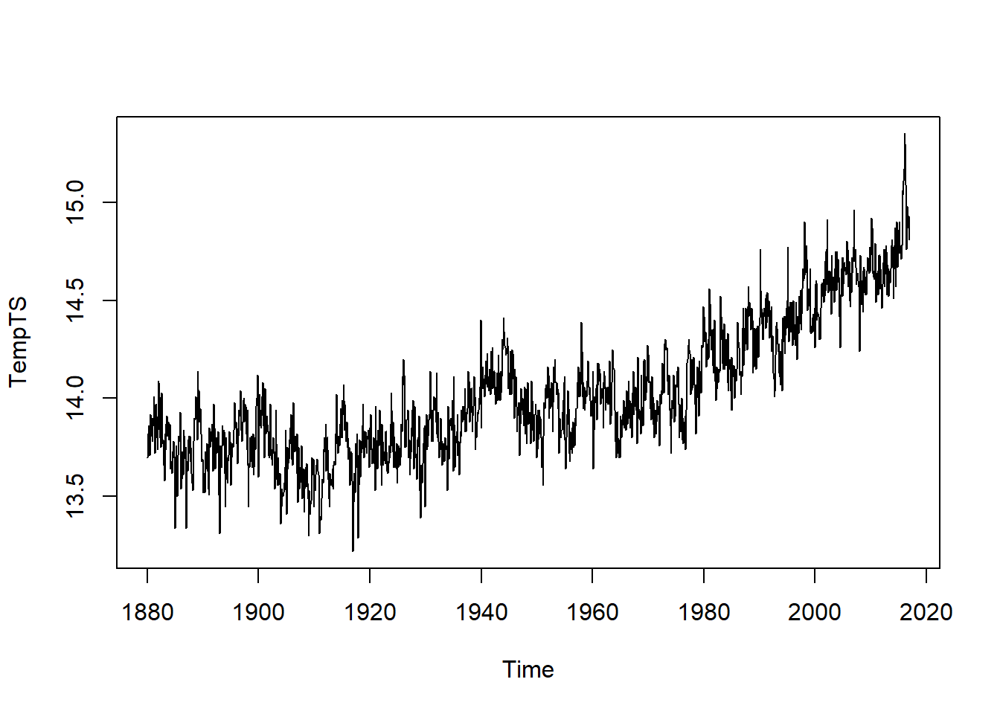
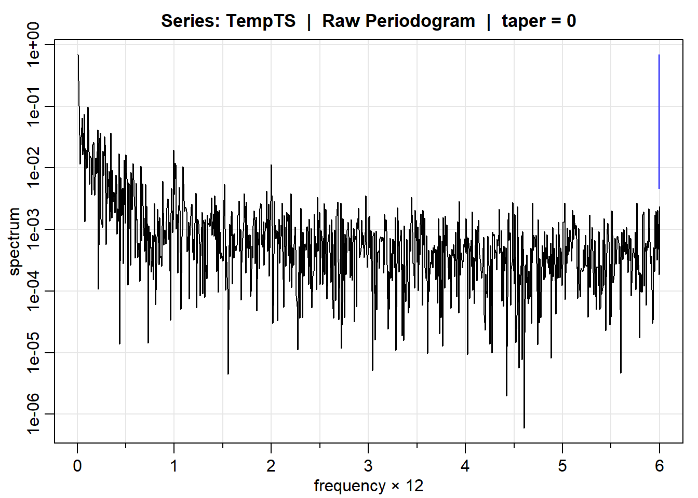
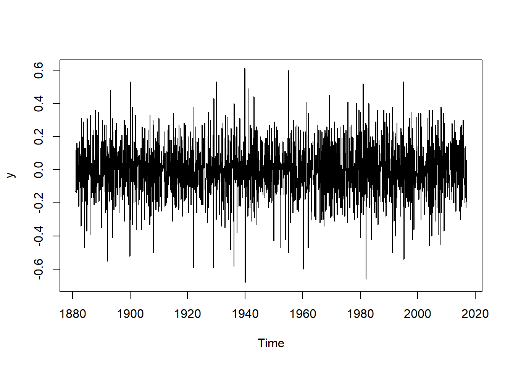
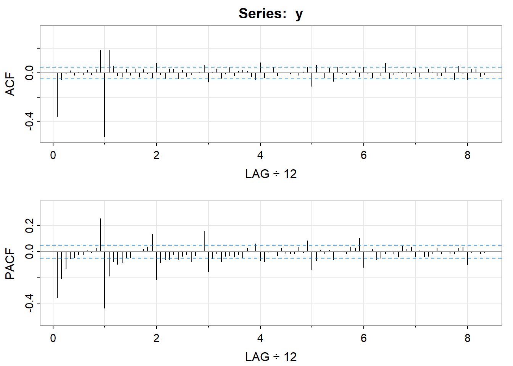
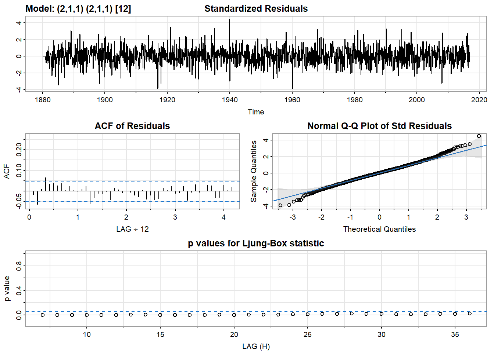
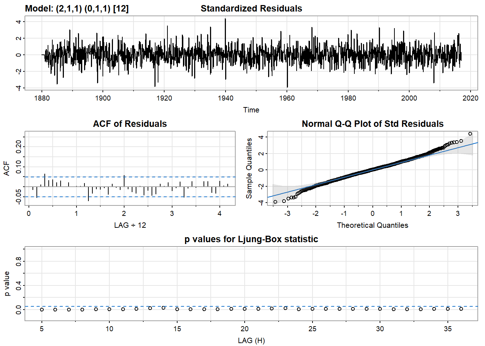
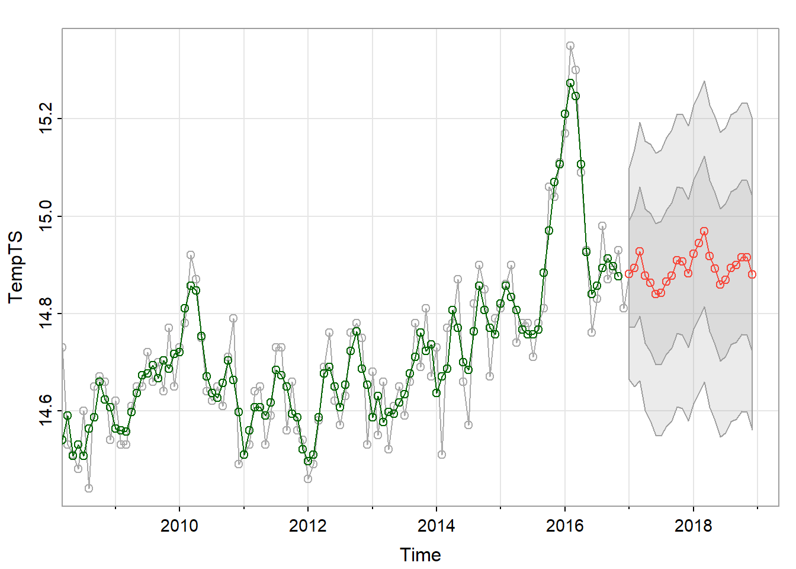
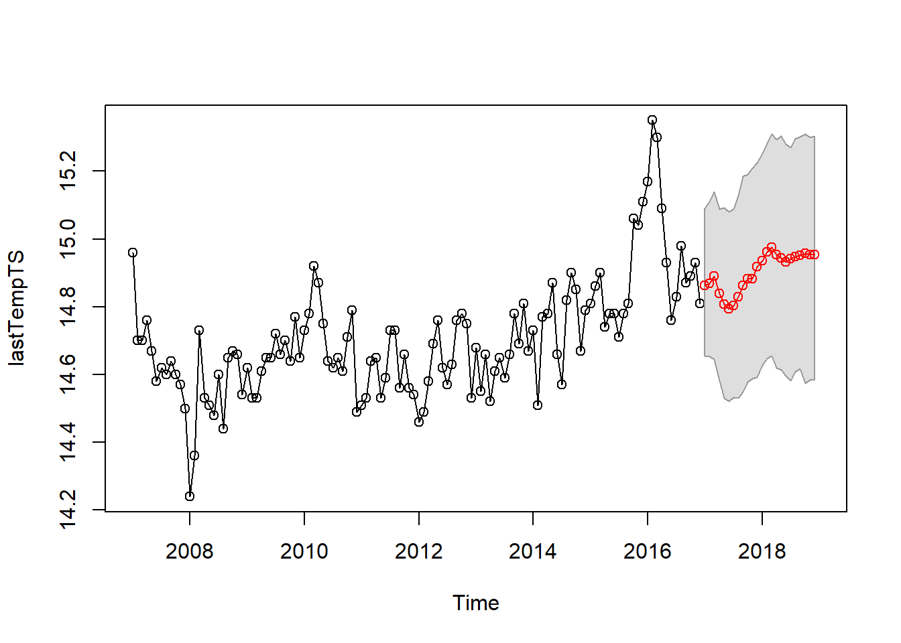
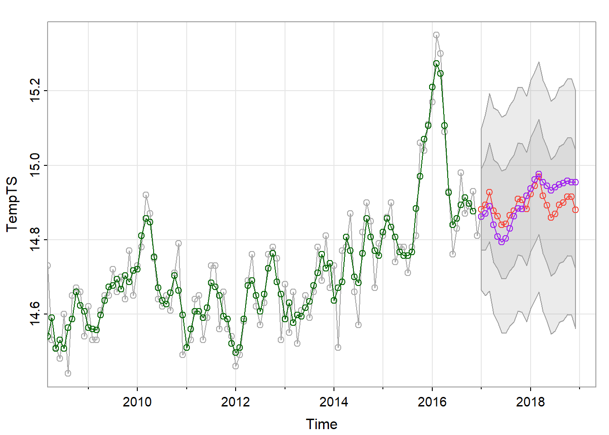
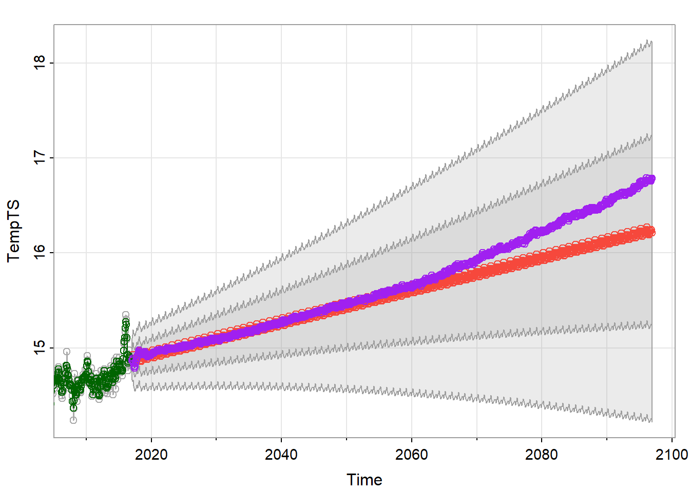

Global Temperature Time Series Forecasting
Abstract
Time data is everywhere, and time series forecasting gives us tools to analyze this data. With a climate crisis on the horizon, it is important to analyze climate time series data in order to better prepare for the future. My project analyzes changes in global temperature from 1880 to the end of 2016, and forecasts these temperatures into the future. First, I perform spectral analysis to discover periodic trends in the data. This justifies the use of a seasonal model. Then, I transform the data and plot its ACF and PACF to find the best parameters for the SARIMA model. I then compare the AIC of select models to justify my choice of parameters. Next, I fit an Auto Regressive Threshold model. To pick the best parameters for this model, I perform a grid search of select p1 and p2 values, and I further infer that based upon the ACF and PACF plots, my choice of parameters makes sense. Finally, I use both my models to forecast global temperatures over the next 24 months from 2016.
Introduction
Motivation
The goal of this project is to forecast global temperature to better understand the direction the climate is headed in the next century. Before taking action, it’s important to understand the problem you want to solve. Forecasting global temperature should help give a better picture of the coming ecological crisis, and clarify what actions need to be taken to slow climate change. This project will use two time series models to forecast how global temperature changes.
Past Studies
In a study by the U.S. Global Change Research Program, it was projected that in the best case, there would be no global temperature change in the next 80 years, and in the worse case, it could increase by as much as 3 degrees Celsius. They used GIS techniques to show how this temperature change could affect different regions, and also projected global carbon emissions. The results of this study are a reality check: if changes are not made, there could be permanent global consequences.
Methods
I have chosen to apply two models for this data: a SARIMA model, and an Auto Regressive Threshold model. I think the SARIMA model has a good chance of making reasonable predictions because global temperature has a 12-month periodicity. In order to give credence to the idea of a 12-month temperature cycle, I’ll use a periodogram to perform spectral analysis. If we find that there is seasonal periodocity in the data, our use of a Seasonal ARIMA model will be justified. I chose an Auto Regressive Threshold as my second model because I suspect that a sharp increase or decrease in temperature may be met with a quick response. A Threshold model allows us to model two sets of parameters for its AR component depending on if the values are above a certain threshold. By adding a level of differencing, we can change the parameters of the AR component based on an increase or decrease in temperature.
Data
Source
I sourced my data from https://datahub.io/core/global-temp#readme, which itself was sourced from https://data.giss.nasa.gov/gistemp/.
Dataset
I chose this data set because I am interested in how data science can be used to improve our future. I think it is important to moderate our behavior around climate and to understand how our actions effect the rest of the world. This data set contains average global temperature change from a “base temperature.” It wasn’t immediately obvious what this base temperature was, but after digging into the original source, I found that it was 14 degrees Celsius, which is the average global temperature between 1951 and 1980. It contains the data in terms of two sources: GCAG and GISTEMP. GISTEMP, developed by NASA, uses satellite data and other collection techniques in order to give an estimate for global mean temperature. GISTEMP is NASA’s standard for global mean temperature, so we will use the values from these rows for prediction.
TempRaw <- read.csv("temp.csv")
TempDF <- TempRaw[order(TempRaw$Date),][TempRaw$Source == "GISTEMP",][,c(2,3)]
TempTS <- ts(TempDF$Mean + 14, start = c(1880,1), frequency = 12) # Global mean temperature from 1951-1980 was 14 degrees Celsius.
plot(TempTS)
From an initial visual analysis, the data does not appear to be stationary because the mean changes over time. There also appears to be a seasonal component to the data. We will need to transform it to use it with a SARIMA model.
Explaination of Methodologies
SARIMA
An ARIMA model is an auto regressive integrated moving average model. ARIMA models have two components: an auto regressive part, which models the \(x_{n}\) observation in terms of \(x_{n-1},x_{n-2},...,x_{n-p}\), and a moving average part, which smooths out the white noise in the data. Each of these terms have coefficients which are typically estimated using numerical analysis. the “integrated” part of the acronym just means that there is a level of differencing that is added to the data before it is fit, which lets us transform it to be stationary if it is not already. p is defined to be the number of terms in the “AR” part of the model, q is defined to be the number of terms in the “MA” part of the model, and d is defined to be the level of differencing used. The full model is written \(\text{ARIMA}(p,d,q)\).
A SARIMA model is like ARIMA model, except it has an additional seasonal component which is fit in the same way as the entire ARIMA model. It is fit with its own P, D, and Q, which correspond to p, d, and q as you would expect. This seasonal component allows us to decipher periodic trends in the data. We can use spectral analysis to determine if there is periodicity in the data or not, and if it is appropriate to use a SARIMA model over an ARIMA model. The full SARIMA model is written \(\text{SARIMA}(p,d,q,P,D,Q,s)\), where p,d,q,P,D,Q are as before and s is the frequency, or the seasonality constant. This would be 12 in the case of a 12-month annual cycle, or 7 in the case of a 7-day weekly cycle.
Auto Regressive Threshold
An Auto Regressive Threshold model is like having two auto regressive models working together. Instead of just one AR model being fit, two (or more) AR models are fit to intervals which have values in a certain range, or above a certain threshold. This gives the model more flexibility than can normally be achived which an ARIMA or SARIMA model. The downside is that there is no “Seasonal” Auto Regressive Threshold model, so if we want to capture some of the seasonality, we need to use a very high order for each of the AR models. The tar function in the TAS package can automatically estimate what thresholds should be set for the data. We will use the given estimate, but know that these thresholds can be set in a variety of ways.
Spectral Analysis
Spectral analysis is a technique for determining if there is periodicity in the data. This will help us determine if a seasonal model is best. We want to look at integer lags times 12 to decipher if there is a 12-month periodicity.
mvspec(TempTS, log = "yes")
We see slight peaks at 1 and 2, suggesting there is some amount of periodicity in the data at lags \(1\times12\) and \(2\times12\). This means a seasonal model is a reasonable choice for this data.
Modeling
SARIMA
The data is not yet stationary, so let’s add a level of differencing with lags 1 and 12 to see if it can become stationary. We use a lag of 12 because our data is monthly data, and we would expect a yearly cycle of temperature peaks and dips. This means the seasonality parameter s equals 12.
y <- TempTS %>% diff() %>% diff(lag = 12)
plot(y)
Visually the data looks very stationary.
A SARIMA model with all of its parameters is written \(\text{SARIMA}(p,d,q)(P,D,Q)_s\). We have already found d = 1 and D = 1 by the first order differencing performed to our data. To find the remaining parameters for our SARIMA model, we look at the ACF and the PACF plots for the transformed data. The ACF plot describes the overall autocorrelation, and is used to find the order of the moving average component of the model. The PACF plot gives us the partial autocorrelation, and is used to determine the order of the autoregressive component.
acf2(y,100)
In the ACF plot, we can see there is a peak at lag 1s, but not at any other lags. This suggests Q = 1. In the PACF plot, the most significant peaks are the first 2, which suggests P = 2. So we have found the seasonal part of our model to be P = 2, D = 1, Q = 1.
We again look at the PACF and ACF plots to determine the parameters for the ARIMA part of our model. We look at the values from \(1, 2, ... 11\) to see if there are peaks. In the ACF plot, we see a peak at lag 1, which suggests q = 1. In the PACF plot, we see the most prominent peaks at lags \(1\) adn \(2\). This suggests p = 2.
Using the parameters we found, the model we will attempt to fit is \(\text{SARIMA}(2,1,1)(2,1,1)_{12}\).
model = sarima(TempTS, 2,1,1, 2,1,1, 12)
model$ttable Estimate SE t.value p.value
ar1 0.4718 0.0289 16.3009 0.0000
ar2 0.2089 0.0278 7.5056 0.0000
ma1 -0.9664 0.0140 -68.8250 0.0000
sar1 0.0188 0.0271 0.6941 0.4877
sar2 0.0664 0.0268 2.4724 0.0135
sma1 -0.9659 0.0094 -103.1299 0.0000print("AIC:"); print(model$AIC)[1] "AIC:"[1] -1.570155The p-values for the Ljung-Box statistic are low, the ACF of residuals is near 0, and the residuals are generally normally distributed, as we can see in the Q-Q plot. All of these things suggest that the model we chose is a good fit for the data. Let’s compare this model to a model which removes the seasonal AR component, to make sure our choice of model is good.
model2 = sarima(TempTS, 2,1,1, 0,1,1, 12)
model2$ttable Estimate SE t.value p.value
ar1 0.4581 0.0312 14.6943 0
ar2 0.1982 0.0295 6.7273 0
ma1 -0.9564 0.0176 -54.4053 0
sma1 -0.9577 0.0097 -98.4798 0print("AIC:"); print(model2$AIC)[1] "AIC:"[1] -1.568819This model has a higher AIC, suggesting that our first model is the better one. So we will use the model \(\text{SARIMA}(2,1,1)(2,1,1)_{12}\).
Threshold Model
In our SARIMA model, we found that there is seasonality present with P = 2. The threshold model doesn’t have a seasonal component, so we are going to try using some high values to try to capture some of the seasonality, like in our SARIMA model.
bestp = 3
bestAIC = tar(TempTS, p1 = 3, p2 = 3, d = 1)$AIC
for(k in c(6,12,18,24,30,36)){
foundaic = tar(TempTS, p1 = k, p2 = k, d = 1)$AIC
if (foundaic < bestAIC){
bestp = k
bestAIC = foundaic
}
}
print(bestp)[1] 24print(bestAIC) 1
-2559 tmodel <- tar(TempTS, p1 = bestp, p2 = bestp, d = 1)We find that the AIC of the model with p1 = 24 and p2 = 24 is the best model in our search. This makes sense, because with P = 2 and s = 12 in the SARIMA model, we should expect 2*12 to be a reasonable choice for p1 and p2.
Forecasting
SARIMA
I decided to fit a \(\text{SARIMA}(2,1,1)(2,1,1)_{12}\) for the SARIMA model. Let’s forecast the next 24 months for this model.
sarima.for(TempTS, n.ahead = 2*12, 2,1,1, 2,1,1, 12, col = "darkgrey")
points(rollmean(TempTS,3),col = "darkgreen")
lines(rollmean(TempTS,3),col = "darkgreen")
The forecast looks much smoother than the original data that came before it. This is likely because there is a lot of noise in the original temperature data. We would expect this because in the PACF graph, the absolute value of the correlation tapers off, suggesting the data is better modeled through its moving average. I’ve superimposed the 3-month moving average on top of the original data using rollmean().
Threshold Model
Let’s use our threshold model to predict the next 24 months of temperature.
n = 2
preds = predict(tmodel, n.ahead = n*12)
lastTempTS = ts(tail(TempTS,120),start=c(2007,1),frequency=12)
timepreds = ts(preds$fit,start=c(2017,1),frequency=12)
timeconflow = ts(t(preds$pred.interval)[,1],start=c(2017,1),frequency=12)
timeconfup = ts(t(preds$pred.interval)[,2],start=c(2017,1),frequency=12)
timeconf = tibble(c(timeconflow,rev(timeconfup)),c(time(timeconflow),rev(time(timeconfup))))
plot(lastTempTS,col="black",xlim=c(2007,2017+n))
points(lastTempTS,col="black")
polygon(x = unlist(as.list(timeconf[,2])), y = unlist(as.list(timeconf[,1])), col="grey87",border="grey60")
lines(timepreds,col="red")
points(timepreds,col="red")
This looks like a reasonable prediction.
Comparison
I want to overlay our two predictions and see how they are similar and how they differ. I’m curious if they agree or disagree in the short-term.
sarima.for(TempTS, n.ahead = 12*n, 2,1,1, 2,1,1, 12, col = "darkgrey")
points(rollmean(TempTS,3),col = "darkgreen")
lines(rollmean(TempTS,3),col = "darkgreen")
lines(timepreds,col="purple")
points(timepreds,col="purple")
They seem to peak and dip at similar times, however the threshold model predicts a smaller dip after the second peak. We can see that the prediction from the threshold model falls within the inner confidence interval of the SARIMA model. I would be interested to see if the structure of the auto regressive components in the threshold model reflects the structure of the auto regressive component in the SARIMA model.
Just for fun, let’s see how our models would project the next 80 years. Because this is such a long time span, there should be a lower confidence in the prediction. However, this might reveal what our models think the general trends in the data show.
n = 80
preds = predict(tmodel, n.ahead = n*12)
lastTempTS = ts(tail(TempTS,120),start=c(2007,1),frequency=12)
timepreds = ts(preds$fit,start=c(2017,1),frequency=12)
sarima.for(TempTS, n.ahead = 12*n, 2,1,1, 2,1,1, 12, col = "darkgrey")
points(rollmean(TempTS,3),col = "darkgreen")
lines(rollmean(TempTS,3),col = "darkgreen")
lines(timepreds,col="purple")
points(timepreds,col="purple")
On the whole, our models tend to agree up until around 2060. The SARIMA model predicts a linear increase, while the TAR model seems to predict an exponential increase, or some other function. This shows that the TAR model is a bit more flexible than the SARIMA model in some situations. Regardless, both of our models predict an increase in global temperature, which is also what the study had forecast.
Conclusion
Time series forecasting helps us make predictions about the future so we can better prepare for it. In this report, I used two types of auto regressive models to forecast global mean temperature. As expected, I found temperatures are rising on average, and swells in temperature cycle with a 12 month period. Both models performed fairly well, and made similar predictions in both the short and long term. I found that the TAR model was more flexible, but this could possibly mean over fitting in comparison to the SARIMA model because we used such a large order. If I were to expand this project, I think it would be a good idea to start with a train/test split so we could compare our models quantitatively.
References and Appendix
References
| Item | Citation or Link |
|---|---|
| Global Mean Temperature Dataset | https://datahub.io/core/global-temp#readme |
| NASA GISTEMP | https://data.giss.nasa.gov/gistemp/ |
| Study by the U.S. Global Change Research Program | https://science2017.globalchange.gov/chapter/executive-summary/ Wuebbles, D.J., D.W. Fahey, K.A. Hibbard, B. DeAngelo, S. Doherty, K. Hayhoe, R. Horton, J.P. Kossin, P.C. Taylor, A.M. Waple, and C.P. Weaver, 2017: Executive summary. In: Climate Science Special Report: Fourth National Climate Assessment, Volume I [Wuebbles, D.J., D.W. Fahey, K.A. Hibbard, D.J. Dokken, B.C. Stewart, and T.K. Maycock (eds.)]. U.S. Global Change Research Program, Washington, DC, USA, pp. 12-34, doi: 10.7930/J0DJ5CTG. |
| Time Series Analysis and its Applications | Shumway, R. H., & Stoffer, D. S. (2017). Time series analysis and its applications: With R examples. Springer. |
Appendix
No supplementary materials.